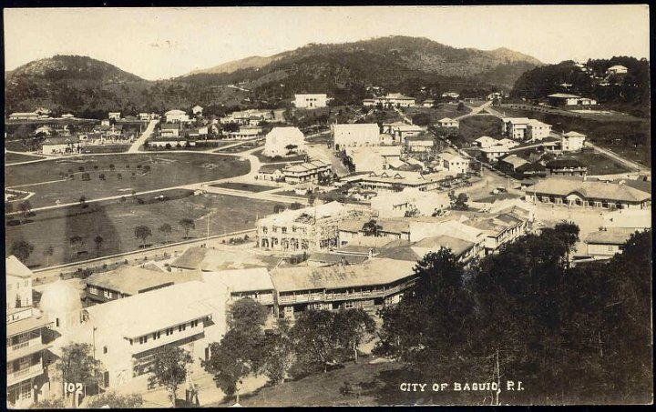

Panagbenga Festival
The Panagbenga a.k.a. or The Baguio Flower Festival is a month-long celebration that lasts from February to March.
The term “Panagbenga” comes from a Kankanaey term meaning “season of blooming”, the festival reflects the the culture
, traditions, history of Cordillera. In this month of February and March, there will be a lot of events that will be held
in the City like Session in Bloom, Float Parade, Performances that will be performed by locals and many more. Come out of town
and lift the spirit of Baguio in you.

Baguio Art Festival
The Baguio Arts Guild began organizing an annual event in 1989 with the goal of making Baguio City a premier location for art
and artists. Performing arts (contemporary dances, drama, music, poetry reading) and ethnic arts (photography, film, video,
sculpture, and art installations) are all represented. This event is usually held every November to December

Baguio Foundation Day
Every first day of the September commemorates Baguio's beginnings as the Philippines' Summer Capital since it was chartered on
September 1, 1909, with art exhibitions, parades, events, cultural displays, and sister-city programs. The Kennon Road, which
connected Baguio with the lowlands of Pangasinan, was built in 1903 by Filipino, Japanese, or Chinese workers. Then On
September 1, 1909 Baguio was declared a chartered city, the second after the city of Manila. They further developed Baguio, by
building parks and public structures such as Wright Park in honor of Governor General Luke E. Wright, Burnham Park in honor of
Baguio city planner Daniel Burnham, Governor Pack Road, and Session Road.
